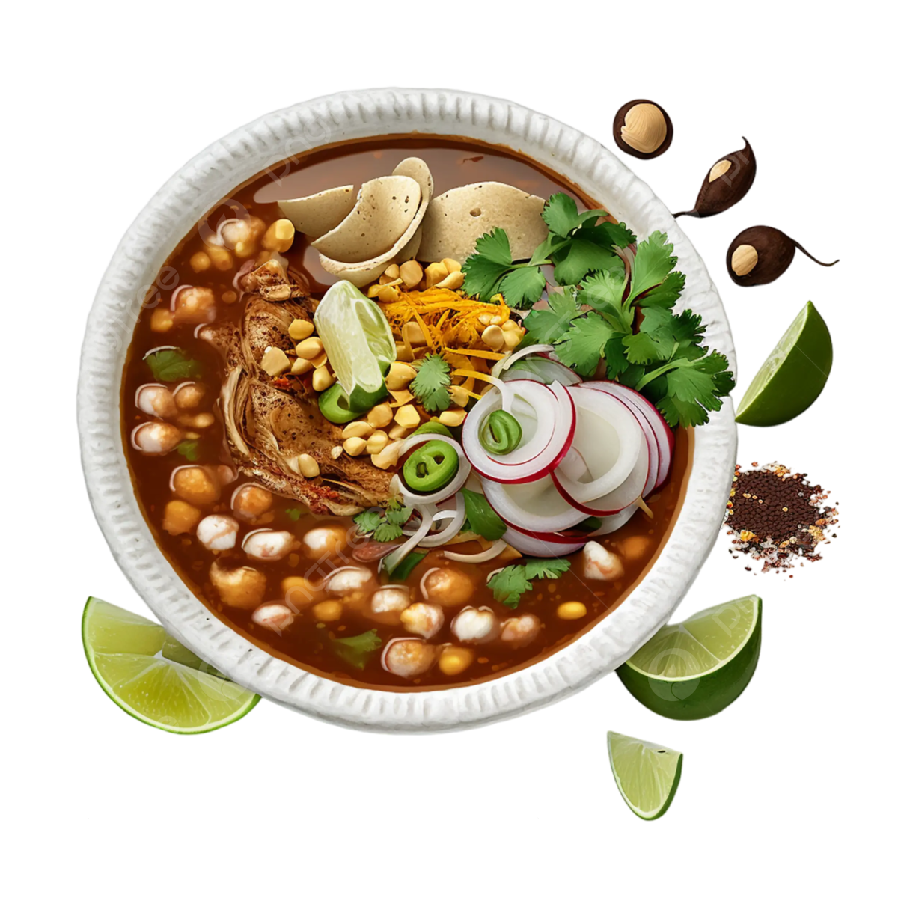

Pozole

Pozole is a hearty Mexican stew typically made with pork, hominy, and chiles. Here's a quick breakdown
Base
- Traditionally pork shoulder, but chicken or seafood can be used.
- Hominy: Large-kernel corn treated with lime, adding a unique texture and flavor.
- Broth: Pork, chicken, or vegetable broth forms the base.
Spice
- Chiles: Guajillo, ancho, or pasilla chiles are commonly used, providing varying levels of heat and
smokiness.
- Spices: Cumin, oregano, garlic, and onion add depth and flavor.
Toppings
- Radishes: Sliced for a spicy crunch.
- Lettuce or cabbage: Adds freshness and crunch.
- Cilantro: A fragrant herb for brightness.
- Lime wedges: A squeeze adds acidity and brightness.
- Avocado: Provides creamy richness.
- Tortillas: Corn tortillas for scooping and dipping.
Preparation
- Meat is simmered in broth with spices and chiles until tender.
- Hominy is added and cooked until heated through.
- Toppings are offered separately for customization.
Variations
- Pozole rojo: Red with guajillo or ancho chiles, offering a smoky flavor.
- Pozole verde: Green with tomatillos and serrano peppers, providing a lighter, brighter flavor.
- Pozole blanco: White with no chiles, offering a milder taste.
Tips
- chile amount for desired heat level.
- Simmer for deeper flavor.
- Customize toppings to your preference.
Enjoy your delicious and warming bowl of pozole!
BACK TO KITCHEN